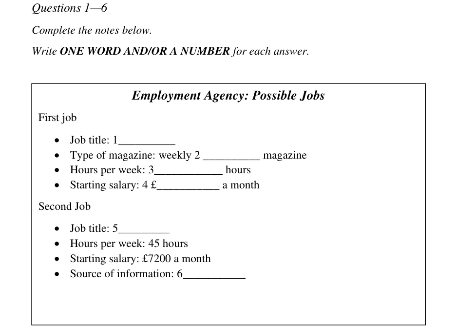
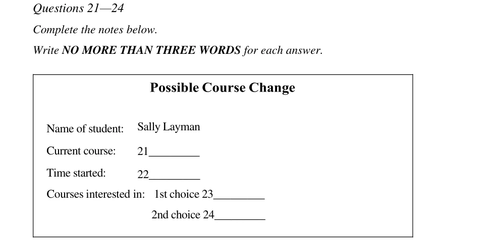
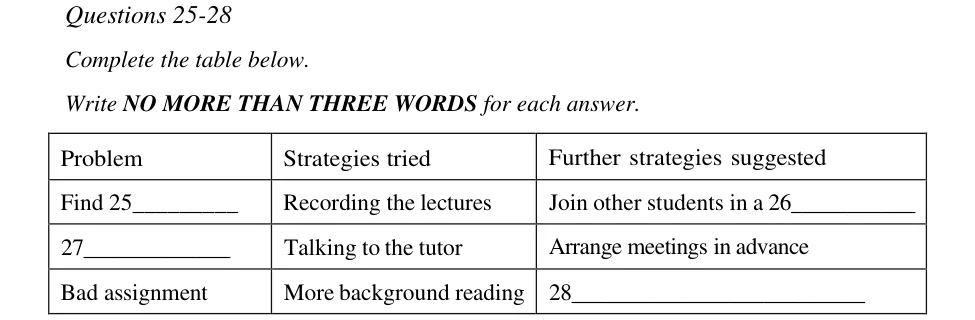
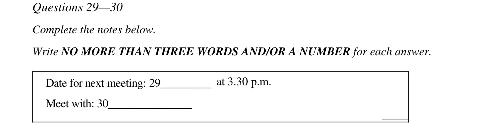
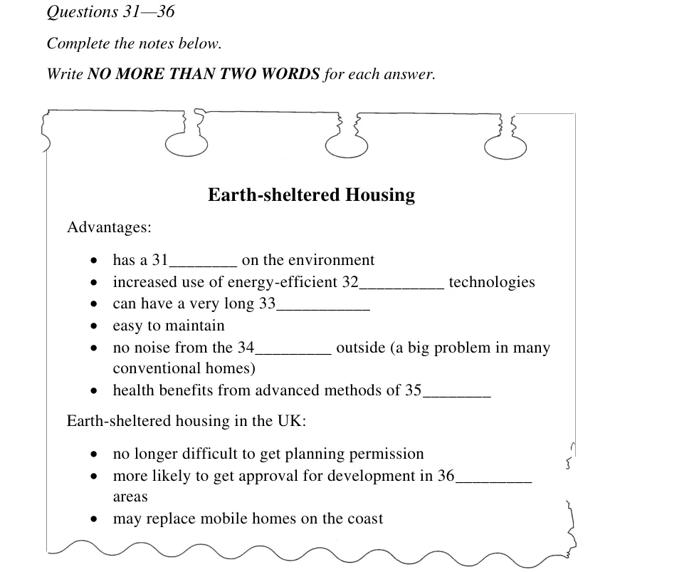

Recent Actual Test 7 · Listening Test 5
Listening and questions
Section 1Questions 1–10

Questions 7–10
What is the man's attitude towards the position of writer in the following different fields?
Write the correct letter, A, B or C, next to Questions 7-10.
Attitudes
- A very interested in
- B slightly interested in
- C not interested in
Fields
7 Sports
8 Entertainment
9 Soap drama
10 Business Economy magazine
Section 2Questions 11–20
Questions 11–20
Choose the correct letter A, B or C.
Muna Island
11 How much should vlsitors tip taXi drivers on the island?
12 What is mentioned about the medical service on the island?
13 The tour guide says the tap water
14 What point is made about bottled water?
15 What feature is mentioned about the bus on the island?
16 How can visitors know the destination of the bus on the island?
17 What does the tour guide advise visitors to do before renting a car?
18 When they rent a car, it's important for visitors to know
19 How can visitors find a taxi easily?
20 What is suggested by the tour guide about the taxi fee?
Section 3Questions 21–30



Section 4Questions 31–40

Questions 37–40
Which UK projects have the following features?
Write the correct letter, A, B or C, next to Questions 37-40.
Projects
- A Mole Manor
- B Hockerton
- C both Mole Manor and Hockerton
Feature
37 favourable reaction
38 self-sufficinecy in energy
39 low building costs
40 luxurious accommodating
Check your answers
Marking ignores capital letters and accepts plurals and the usual alternative answers. If your answer is right but not accepted, press My answer is also right under it.